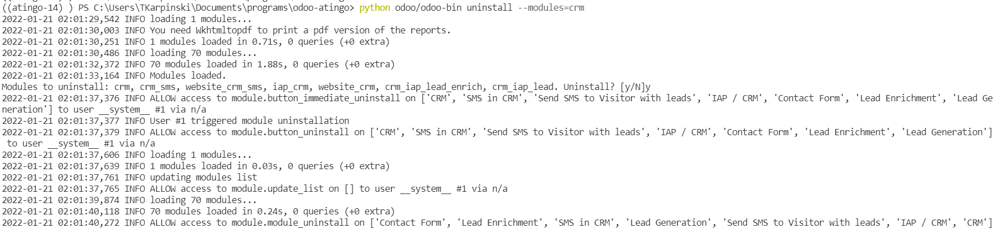
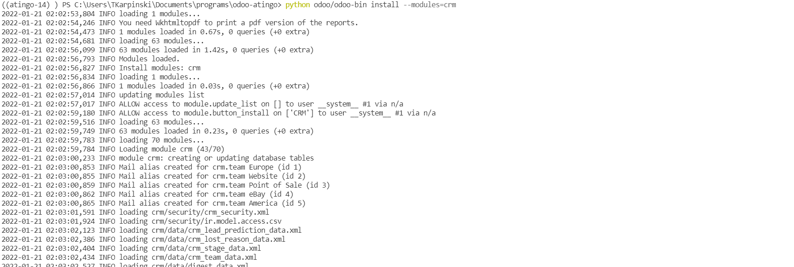
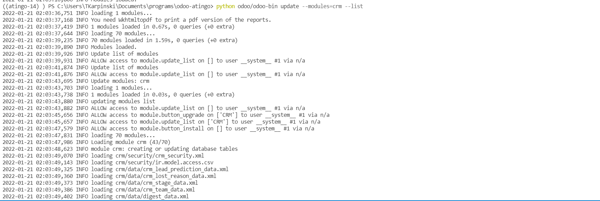

<div class="container" style="font-weight: 400 !important; font-size: 1rem !important;">
    <div class="col-sm-12">
        
        <h2 class="oe_slogan" style="color:#875A7B;">Odoo Update</h2>
        <p>With this module developer can update install and uninstall modules from command line. Module should be loaded from default config, or placed directly in odoo addons.</p>
        <h2 class="oe_slogan" style="color:#875A7B;">Update</h2>
        <p>Update single module</p>
        <pre style="background-color: #f5f5f5">python odoo-bin update --module=crm</pre>
        <p>Update multiple modules</p>
        <pre style="background-color: #f5f5f5">python odoo-bin update --modules=crm,sale</pre> 
        <p>Update modules with their dependencies</p>
        <pre style="background-color: #f5f5f5">python odoo-bin update --modules=crm,sale --with-depends</pre> 
        <p>By default base in never updated. Add --with-base to update with base</p>
        <pre style="background-color: #f5f5f5">python odoo-bin update --modules=crm,sale --with-depends --with-base</pre>
        <p>Update apps list</p>
        <pre style="background-color: #f5f5f5">python odoo-bin update --list</pre>
        <p>This module added extra <b>post_update_hook</b>, which can be used in any module updated with this command. Example can be found inside.</p>
        <h2 class="oe_slogan" style="color:#875A7B;">Install</h2>
        <p>Install single module</p>
        <pre style="background-color: #f5f5f5">python odoo-bin install --module=crm</pre>
        <p>Install multiple modules</p>
        <pre style="background-color: #f5f5f5">python odoo-bin install --modules=crm,sale</pre>
        <h2 class="oe_slogan" style="color:#875A7B;">Uninstall</h2>
        <p>Uninstall single module</p>
        <pre style="background-color: #f5f5f5">python odoo-bin uninstall --module=crm</pre>
        <p>Uninstall multiple modules</p>
        <pre style="background-color: #f5f5f5">python odoo-bin uninstall --modules=crm,sale</pre>
        <p>By default user must confirm uninstallation. Confirmation can be skipped</p>
        <pre style="background-color: #f5f5f5">python odoo-bin uninstall --modules=crm,sale --force</pre>
        <br/>
        <p>In case of any questions don't hesitate to email me: <b>tadeusz.karpinski@gmail.com</b></p>
        <h2 class="oe_slogan" style="color:#875A7B;">Screenshots</h2>
        <p>Screenshot 1</p>
        
        <p>Screenshot 2</p>
        
        <p>Screenshot 3</p>
        
    </div>
</div>